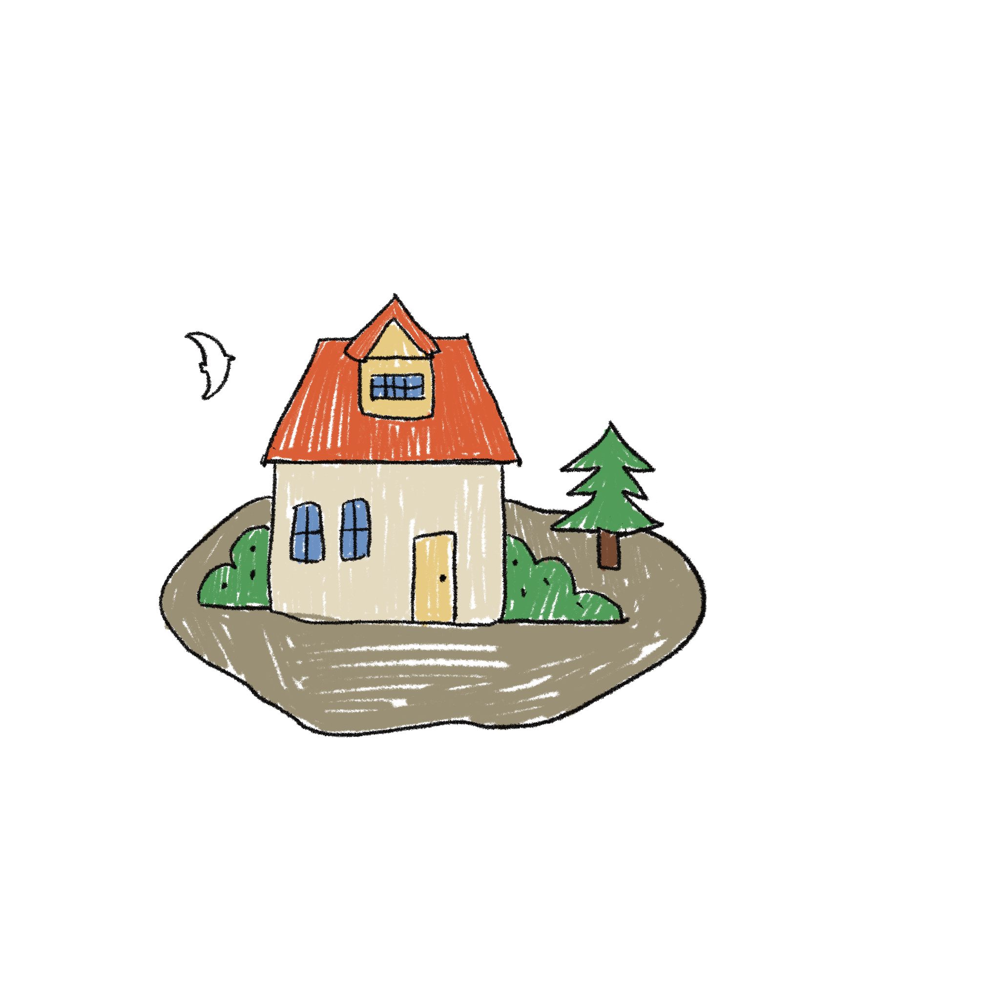
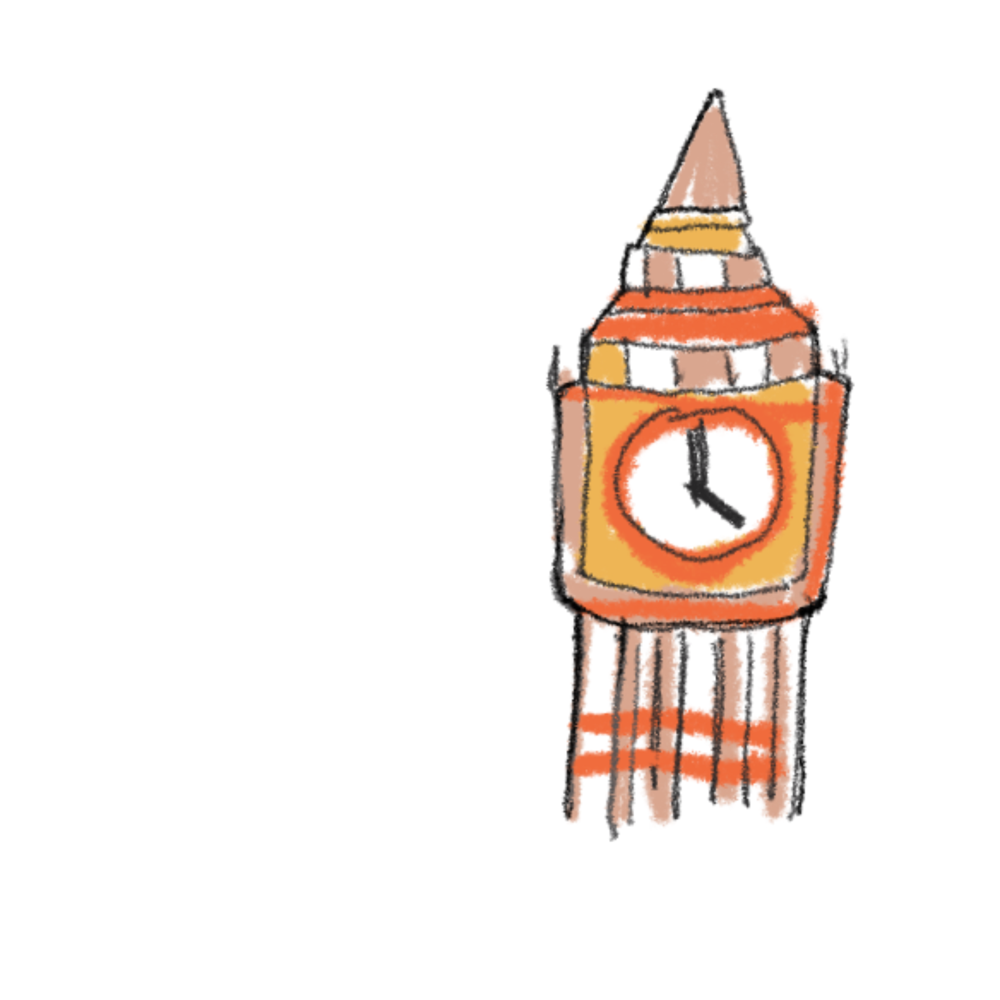
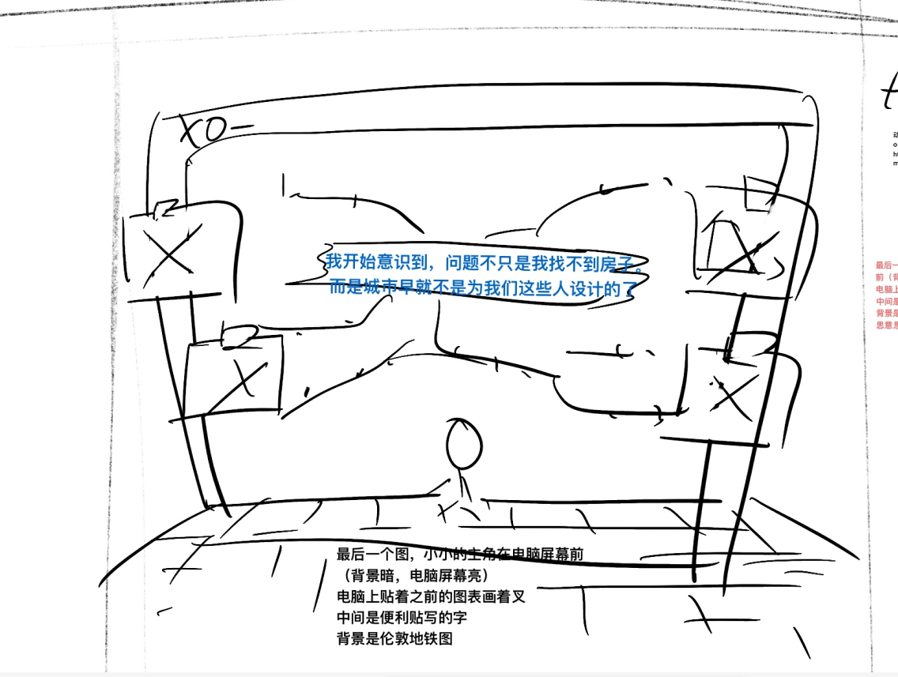

She did everything she should do
She grew up in the suburbs. Her family was not wealthy and her parents had a tense relationship
She was admitted to a good university.
I have stable grades and am striving to apply for scholarships
Working during the summer vacation didn't delay the thesis either
She was recruited by a company in London after graduation
A job as a UX designer of her dreams
The salary is not high, but it's much better than that in my hometown
Now, there is only one question left: Where is she going to live
She opened the rental platform and saw that the prices were densely distributed on the map
This chart shows the median monthly rent of single-person apartments in different areas of London
(Data source:https://www.gov.uk/government/statistics/private-rental-market-statistics)。
It can be seen that even in areas outside Zone 3, the rent is much higher than 30% of Sophie's monthly income. This is a commonly recognized "rent burden warning line".
The varying shades of color in the picture emphasize the gap between income and rent, revealing that "unaffordable rent" is not merely a feeling but a fact excluded by systematic pricing.
Her income is £1,850 per month, and she spends at most 30% of it on rent
So she considered living further away so that she could afford it
What is the cost?
Commuting for 2 hours every day, taking the subway and feeling lonely
The circles in the figure visualize the average commuting distances of different areas in London
(Data source:Travel to work, England and Wales Census 2021)。
It can be seen that although the rent in the city center area is expensive,
the commuting time is relatively short. In the peripheral areas with slightly lower rents, the commuting time has increased sharply.
This further explains the realistic choice Sophie is facing: she can afford to live in a house far from the city center,
but at the cost of a high-intensity daily commute - which will erode her time, energy and quality of life, and most of her time each day is spent on transportation.
So she looked up more and found that the income in those places with the highest rent remained unchanged all year round
This chart shows the growth trends of the median rent and median wage in London from 2013 to 2019(Data source:https://www.ons.gov.uk/)。
The line graph clearly shows that the increase rate of rent is greater than that of wages. Even though wages increase slightly every year,
rents are pushing people away from the city center at a faster rate.
Sophie began to understand that the housing crisis was not a matter of personal choice, but rather a tilt in resource allocation under systematic design.
The increase in population has also increased the demand for houses
Apart from economic pressure, the urban population structure and housing policies are also the deep-seated causes of the problem.
With the growth of London's population, especially the continuous influx of immigrants (including some illegal residents),
the imbalance between urban infrastructure and housing supply has become increasingly serious (Data source: https://data.london.gov.uk/demography/).
Meanwhile, this contrasts sharply with the average wage growth rate in London over the past 7 years.
The salaries earned by the public are not sufficient to balance their lives and those in the workplace.
Sophie is no longer just a girl who can't find a place to live. Behind her predicament, a city logic that intensifies exclusivity is quietly at work.

I began to realize that the problem was not just that I couldn't find a house,
but that cities were no longer designed for people like us